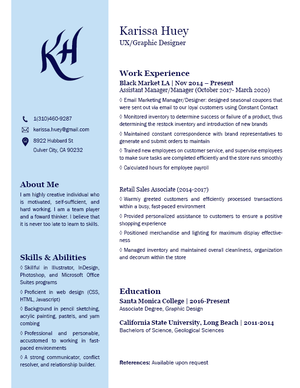

Born and raised in Los Angeles, California, I am able to find inspiration anywhere in the City of Angeles. I was a Geologist in my former life, but I soon realized that Geology was not the path for me.
After taking a graphic design class at Santa Monica College in the summer of 2016, I fell in love with graphic design. It is a mingling of science and artistry that I was searching for. I decided to pursue graphic design, and in 2017 I took the initiative at my job, BlackMarket, to manage and design their coupons and email correspondence.
Graphic design encompasses such a diverse set of skills and technilogical advancements; I am excited to see what other new skills I can grasp.
